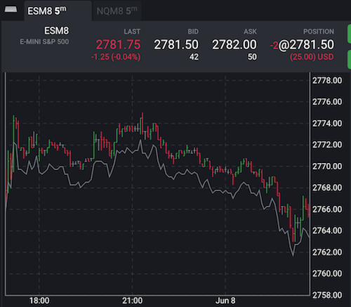

Simple Price Offset
Imagine that we need an indicator that will show a line with some offset from input series data. Something like Offset Indicator = Input Value - 2.0. It could be used as a stop loss line with our magic number.
Our indicator's file is a Javascript's CommonJS module. The module exports a definition of the indicator for Tradovate Trader: how to uniquely identify our indicator in the library of indicators, how to calculate values, how to plot them, default colors, and styles. The application expects that the definition implements Indicator interface.
Our first module will look like the next code:
class offset {
map(d) {
return d.value() - 2.0;
}
}
module.exports = {
name: "exampleOffset",
calculator: offset
};

The export here will tell the app to add an indicator with the unique name exampleOffset and calculations for this indicator are coded in class offset. The application expects the class implements Calculator interface.
The name field plays the role of a machine-readable identifier. We don't expect it to be some nice looking text.
To be a calculator, the class should implement at least one function: Calculator.map. The function maps or translates an input value to output one, that's it. The input value is an object that points to just one item in input series and the app iterates through the whole series one by one in some sort of a loop. Here is a pseudo-code that can give some clues what is going on under the hood:
const inputSeries = [
{ date: Date.parse('2018-06-05'), value: () => 2770.25 },
{ date: Date.parse('2018-06-06'), value: () => 2770.50 },
...];
const outputSeries = [];
const offsetIndicator = require("exampleOffset");
const calculator = new offsetIndicator.calculator();
for(let i=0; i<inputSeries.length; ++i) {
outputSeries.push(calculator.map(inputSeries[i], i, inputSeries, outputSeries))
}
// Now outputSeries can go plotting to the screen
The application calls the map function with four arguments: the current item, index of the item in the input series, input series, and a series with previously calculated values. As for our Price Offset Indicator, it is enough just to use the input item.
As soon as we put our indicator to the app via Code Explorer, the Charts module will show it in the list of indicators with the name 'EXAMPLEOFFSET'. It will just plot a grey line by default with some offset below the input. Later, we will learn how to customize our indicators with a human-friendlier name.
Generated using TypeDoc